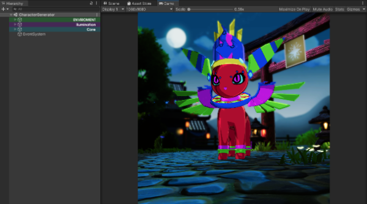
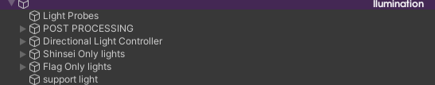

Shinsei Generator
The objective of this document is to provide a clear and detailed guide of the Shinsei generation process and the main components of the tool so that any programmer can develop the content generation activity for Sacred Tails NFTs.
SetUp:
- Unity version: 2020.3.23.f1
- Repository branch: Feat_NFTVideoGen
- Scene: Character Generator
Structure and components of the scene
The scene is divided into 3 main components: Environment, Lighting, and Core.

Environment:
Contains the props and assets that make up the scene in which the Shinsei generator videos are captured and processed, and it is organized as follows:
The main elements of the stage are separated by category, vegetation, props (buildings and accessories), particle systems, and the sprites that make up the horizon. The Shinsei Gate is outside of the containers because it contains the flag that indicates the type of Shinsei. This flag is the only object in the environment that has a reference within the "ShinseiGenerator.cs" script, which will be detailed later.
Lighting:
The lighting within the scene is handled by different sources to keep in mind in case changes are required. The distribution of lights within the scene is as follows:

The main thing to keep in mind is the directional light controller, which contains the directional light source of the scene, and the light manager, which contains the components necessary to control the time of day and the sky tones.
The other light sources are located according to the elements of the scene that they affect, in Shinsei only lights and Flag Only lights are light sources that only affect the shinsei and the flag respectively. while the support light is only an auxiliary light that affects all elements within the scene.
Core:
Contains the elements responsible for the generation and recording of shinseis. And these are its main elements:
Shinsei Generation Manager is the object that contains the ShinseiGenerator.cs class and is where all the actions of generating shinseis, recording videos and storing JSONs are performed. There are 2 cameras, one responsible for recording the content (Video Capture) and another that only serves the purpose of showing us the content of the scene in the game view. The ShinseiWardrobe is responsible for changing the parts of the Skinned_Shinsei_Atlas according to the DNA and is referenced within the ShinseiGenerator.cs, while the color swapper is responsible for assigning the correct color palette to the shinsei in question.
Inicialization:
To start, the types of Shinseis that are going to be generated in the pool of types within the CharacterGenerator.cs in the Shinsei generation manager must be established.
In this example, the corresponding families for the second generation of Shinseis are set, so that the Shinseis that will be generated do not have parts of foreign families. Subsequently, the scriptable objects that will contain the generated Shinseis must be created. The name of the scriptable object is "Generated Shinsei Container" which is a database of Shinseis. It is recommended to use this structure for ease of management.
Create a shinsei container per rarity-type of shinsei included in the sale, more or less in the following way:
Shinsei Generation:
To begin generating the shinseis that will be released, you must first drag one of the Generated Shinsei Containers to the InputSO and OutputSO fields in the Shinsei Generator manager, then set the number of shinseis that will be generated (Shinseis to generate) and the index with which the new shinsei count should start (Last Index), this index should be the value of the last shinsei generated in the previous sale or in the last batch of generated shinseis (for example, if the last shinsei in the previous sale has an index of 2999, the Last Index should be assigned as 3000).

Once this is established, you must proceed to enter play mode, and there choose the type and rarity of the Shinseis that will be generated to fill that Generated Shinsei Container. Once the type and rarity are chosen, within playmode you must activate the "Invoke" button within the component.
If the Shinsei type (Desired Type) is not contained within the type pool, then the function will not be executed and a warning log will be displayed. To generate Shinseis of celestial type, only tiers from legendary1 to legendary2 can be chosen.
Repeat this process for all SOs created for the sale.
Note:
As the scriptable objects (Generated shinsei container) are filled in runtime, they are never saved in git changes. It is suggested that after generating a batch, add and remove an element from the scriptable and then save the project to ensure they are included in the changes.
Generation of content for Minting
Generation of videos
To generate videos, first a path must be assigned in the VideoCaptureManager and VideoCapture components within the object in the scene called VideoCapture. (Here you can also modify the desired resolution and frame rate.)
Once the path is set, you must select the Generated Shinsei Container from which the videos will be generated and drag it to the InputSO and OutputSO fields of the ShinseiGenerator in the shinsei generation manager.
Then, enter play mode and press the record button within the component. The editor will take approximately 30 seconds per shinsei, and will generate the videos in the specified folder. Once finished with a batch, another shinsei container should be assigned and the button pressed again to continue the task until all videos are generated.
Upload to IPFS: Once all videos are generated, they must be uploaded to the timba drive, specifically in the following path: Instinct>SacredTails>Mint>Videos>Folder with the sale number, all while having a backup of the information. Then, from a single PC, all videos must be downloaded and then uploaded to an IPFS folder (IPFS desktop is recommended).
Once there, you must copy the CID of the folder and give it to the client, so that they can import the files to pinata. During this process, the computer that uploaded the files must be kept on and have a stable internet connection. (It is of vital importance to verify that the videos do not require corrections and are correct before the next step). If all files are found and it is certain that no video needs to be corrected, the next step is to copy that CID of the folder and paste it within the ShinseiGenerator.cs script as the value of the string ipfsCID in the following line.
Make sure to save changes in the script.
Generation of Metadata: To generate the metadata JSONs, all the Shinsei containers that were used for video generation must be dragged to the following list in the ShinseiGenerator.cs.
Subsequently, enter playmode and press the Save Json Files button of the component in question.
The editor will appear to freeze for a brief moment, and when it finishes generating the Jsons, the files will be found in the following path of the project: SacredTails(root)>GeneratedShinseis>JSON> Hoardable/OpenSea. It is recommended to compress these folders and send them to the client when the process is finished, they should be responsible for using them for the minting process.